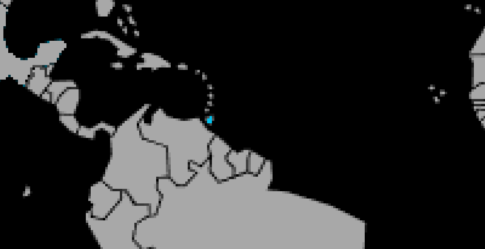

Systématique
- Ordre : Cyprinodontiformes
- Famille : Poeciliidae
- Genre : Poecilia
- Espèce : Poecilia obscura
Poecilia obscura est un très petit vivipare proche du guppy commun, originaire de Trinidad, présentant des mâles polymorphes aux motifs variables.
Les mâles atteignent environ 2 cm, les femelles jusqu’à 3 cm, ce qui en fait une espèce particulièrement adaptée aux petits bacs spécifiques bien plantés.
L’espèce vit en groupes et occupe surtout les zones médianes et superficielles, où les mâles paradent fréquemment devant les femelles.
La petite taille et le tempérament vif imposent un décor dense en plantes fines et mousses, offrant des refuges permanents pour les alevins et limitant le stress.
Mode : ovovivipare ; les femelles donnent naissance à de très petits alevins déjà formés, généralement moins nombreux que chez le guppy d’élevage mais de façon régulière.
Les jeunes restent volontiers près du fond et dans les mousses, et peuvent être nourris avec des infusoires, poudres pour alevins et nauplies d’artémias fraîches.
Dimorphisme sexuel : mâle plus petit, coloré, avec gonopodium ; femelle plus grande, corps plus trapu et coloration grisâtre discrète.
Espérance de vie : en général 2 à 3 ans en aquarium, parfois un peu plus dans une eau stable et bien oxygénée.
L’espèce est inféodée aux rivières et ruisseaux du système de l’Oropuche à Trinidad, aux eaux claires à légèrement teintées, peu profondes et richement végétalisées.
Répartition
Origine naturelle :
- Île de Trinidad (Trinité-et-Tobago), bassin de l’Oropuche.
- Ruisseaux et petites rivières lentes, souvent ombragés et bordés de végétation dense.
L’espèce apprécie les zones calmes peu profondes avec beaucoup de plantes aquatiques et de feuilles mortes, qui servent de refuge aux alevins.
Paramètres de maintenance
Température : 22 à 26 °C.
pH : 6,5 à 7,5.
GH : 3 à 12 °dGH, eau douce à légèrement minéralisée.
Courant : faible à modéré, avec une filtration douce pour ne pas fatiguer ces petits poissons.
Volume conseillé : à partir de 30–40 L pour un groupe spécifique, bien planté avec mousses et plantes fines.
Régime alimentaire
Régime : omnivore microphage, se nourrissant de micro-invertébrés, algues et biofilm ; accepte flocons fins, micro-granulés, nauplies d’artémias et poudres pour alevins.
Des apports réguliers de petites proies vivantes ou congelées améliorent la coloration des mâles et conditionnent bien les adultes à la reproduction.